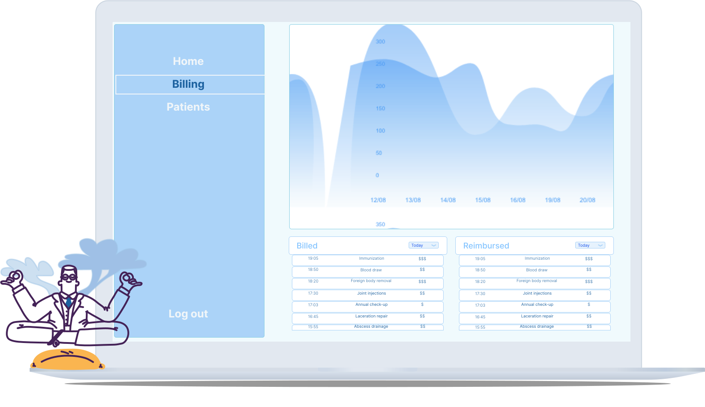

<!DOCTYPE html>
<html lang="en">

</html>

<head>
    <meta charset="UTF-8">
    <meta name="viewport" content="width=device-width, initial-scale=1.0">
    <meta http-equiv="X-UA-Compatible" content="ie=edge">

    <title>Barbora Dragunova</title>

    <!--Fav Icon-->
    <link rel="icon" href="./CSS/MyIcon.svg">

    <!--CSS Framework-->
    <link href="https://cdn.jsdelivr.net/npm/bootstrap@5.0.1/dist/css/bootstrap.min.css" rel="stylesheet"
        integrity="sha384-+0n0xVW2eSR5OomGNYDnhzAbDsOXxcvSN1TPprVMTNDbiYZCxYbOOl7+AMvyTG2x" crossorigin="anonymous">

    <!--My CSS-->
    <link rel="stylesheet" href="./CSS/style.css">

    <!--Google Fonts -->
    <link href="https://fonts.googleapis.com/css?family=Roboto" rel="stylesheet">

</head>

<body>

    <!--Nav Bar -->

    <div class="container">
        <nav class="navbar navbar-expand-lg navbar-light" style="background-color:#FFFFFF;">
            <div class="container-fluid">
                <a class="navbar-brand" href="index.html">
                    
                </a>
                <div class="navbar-nav">
                    <a class="nav-link" aria-current="page" href="index.html">Home</a>
                    <a class="nav-link active" href="index.html">Projects</a>
                    <a class="nav-link" href="about.html">About</a>
                </div>
            </div>
        </nav>
    </div>

    <!--Case Study -->
    <div class="container">
        <div class="cs1">

            <div class="container">
                <div class="cs2-intro">
                    <div class="cs2-header">
                        <h1>-- Swyft --</h1>
                    </div>
                    <h2>Mobile and Desktop App</h2>
                    <p class="text-muted">
                        <spam style="text-align: center;">Swyft created AI helping with doctor's billing needs, to help with medical administration and billing-related doctor needs. 
                            By using User-centered Design and Design Thinking techniques, 
                            I created successful UI design which has been tested using heuristic evaluation and cognitive walkthrough self evaluation 
                            techniques with a focus on ease of use and user experience for medical startup Swyft.</spam>
                    </p>
                    
                </div>
            </div>

            <div class="container">
                <div class="cs2-body">
                    <h2>My Role</h2>
                    <p>In this project I created interaction and visual designs, built prototypes and conducted tests. 
                        The high-level requirement of the project was to design a one-stop shop for all a physician’s administrative needs. 
                         </p>

                    <h2>The Challenge </h2>
                    <p> The project requirements were specified in any detail. I’ve received only a high-level objective and client’s “wish-list”.
                        The goal was to create a of an app that would help physicians with their administrative tasks. The app had to be available for 
                        both mobile and desktop users. In order to accomplish this task, I designed a study that helped me better understand my main user-group - doctors.
                    </p>

                    <h2>The Study</h2>
                    <p>I designed a study to help me better understand my main user-group. I conducted a Contextual
                        Inquiry (CI).
                        This is an early product UX lifecycle activity to gather detailed descriptions of user work
                        practice for
                        the purpose of understanding work activities and underlying rationale.
                    </p>
                    <p>This was based on a short questionnaire aimed at doctors. It asked target
                        users about
                        their experiences with medical administration: the processes, main areas of administration work,
                        how much time
                        they spent on it, what can be improved, etc.
                    </p> 
                    <div id="artifacts">
                    
                    </div>

                    <p>Answers were evaluated and grouped in a Work Activity Affinity Diagram (WAAD), which helped me
                        distill the main
                        pain-points. In order to build empathy with the users, I created
                        user personas,
                        and experience maps. An experience map is a visualization of an entire end-to-end experience that a “generic” person goes through in order to accomplish a goal. ... It's used for understanding a general human behavior 
                    </p>
                    <p>The most repeated themes were also addressed in scenario and solution sketches. The final design is an
                        attempt to solve these issues.
                        
                    </p>
                    <p>It was evaluated using heuristic evaluation and cognitive walkthrough, which are both
                        usability
                        inspection methods for identifying usability issues in interactive systems.
                    </p>

                    <h2>The Design</h2>
                    <p>After learning about the user’s pain-points, I started to design the app itself. Early iterations
                        included
                        distilling the key functional requirements and the creation of user flows. This was followed
                        by low fidelity wireframes.
                    </p>
                    <p>These wireframes were evaluated using the heuristic evaluation method, which involves a small set
                        of
                        evaluators examining the interface to judge its compliance with recognized usability principles.
                        I also utilized 
                        cognitive walkthrough (CW), usability method in which evaluators work through a series of tasks
                        and ask a
                        set of questions from the perspective of the user. The focus with this method is on understanding the 
                        learnability of the system for new or infrequent users.
                    </p>
                    <p>After the design had been evaluated and tested, I transformed it into high fidelity mockups
                        created in Adobe XD.</p>
                    <h2>Project Outcomes</h2>
                    <p>The study successfully summarized the real problems that users were facing. The study also suggested how this 
                        system can solve these issues, backed up by hard data. I also provided a fully evaluated high fidelity mockup of 
                        the system which gave a sense and feel for what the real app would be like.
                        For me personally, the biggest takeaway of this project was creation and completion of the whole study from start to finish. This was my
                        first end-to-end individual
                        project completed with minimal supervision from senior staff and it demonstrates my ability to
                        successfully drive
                        projects from inception to completion. 
                    </p>
                </div>
            </div>
        </div>
    </div>


    <!--Let's Connect Footer -->

    <footer class="bd-footer py-5 mt-5 bg-light">
        <div class="container text-center">
            <h5>Let's connect</h5>
            <h6 class="text-muted">Get in touch for opportunities or just to say hi!</h6>
            <div class="container">
                <div class="row">
                    <div class="col">
                        <a href="https://www.linkedin.com/in/barbora-dragunova-5b718997/">
                             </a>
                            <a href="mailto:hello@barboradragunova.com">
                             </a>
                    </div>
                </div>
            </div>
        </div>
    </footer>


</body>

</html>